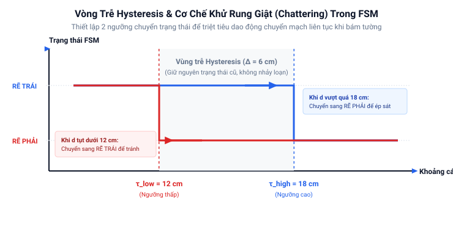

4.1 Mô hình Toán học của FSM
Máy trạng thái hữu hạn (Finite State Machine - FSM) là công cụ toán học nền tảng để điều khiển robot dựa trên sự kiện rời rạc. Một FSM được định nghĩa bởi bộ 5 thành phần $(S, I, O, \delta, \lambda)$:
- $S = \{s_1, s_2, \dots, s_n\}$: Tập hữu hạn các trạng thái của robot.
- $I$: Tập các sự kiện đầu vào (tín hiệu cảm biến vượt ngưỡng, bấm nút, timer).
- $O$: Tập các đầu ra điều khiển (lệnh vận tốc động cơ, đèn LED).
- $\delta: S \times I \to S$: Hàm chuyển trạng thái (State Transition Function).
- $\lambda: S \times I \to O$ (Mealy) hoặc $\lambda: S \to O$ (Moore): Hàm sinh đầu ra.
4.2 Hành vi Men Tường (Wall-Following FSM)
Hành vi men tường giúp robot di chuyển dọc theo chu vi phòng hoặc chướng ngại vật lớn. Robot gồm 4 trạng thái điển hình:
FIND_WALL: Tiến thẳng cho tới khi cảm biến phát hiện tường ở cự ly gần.TURN_TO_ALIGN: Quay thân xe song song với phương của tường.FOLLOW_WALL: Duy trì cự ly ổn định song song với mặt tường.AVOID_COLLISION: Lùi lại và rẽ góc gấp khi gặp góc tường cụt.
4.3 Hiện tượng Rung giật Chuyển mạch (Chattering Phenomenon)
Nếu lập trình viên chỉ dùng một ngưỡng khoảng cách duy nhất $\tau$ (ví dụ $\tau = 20\text{ cm}$): khi $d \lt 20\text{ cm}$ thì bẻ lái ra xa; khi $d \ge 20\text{ cm}$ thì bẻ lái vào gần. Do nhiễu cảm biến luôn dao động $\pm 1 - 2\text{ cm}$, robot sẽ chuyển trạng thái liên tục hàng chục lần mỗi giây. Hiện tượng này gọi là Chattering (rung giật), làm mòn bánh răng động cơ và tiêu hao năng lượng trầm trọng.
4.4 Kỹ thuật Dải Trễ (Hysteresis Deadband)
Giải pháp chuẩn học thuật là áp dụng Ngưỡng kép (Dual Thresholds) tạo nên một vùng chết (Deadband) $[\tau_{low}, \tau_{high}]$:

🔢 THIẾT KẾ DẢI TRỄ KHỬ CHATTERING CHO ROBOT HÚT BỤI
Bài toán: Robot hút bụi sử dụng cảm biến ToF có độ lệch chuẩn nhiễu đo $\sigma = 1.2\text{ cm}$. Robot cần duy trì khoảng cách danh định $d_0 = 15.0\text{ cm}$ dọc chân tường. Để triệt tiêu $99.7\%$ nguy cơ chattering do nhiễu Gauss gây ra, hãy xác định các ngưỡng $\tau_{low}$ và $\tau_{high}$ tối ưu theo quy tắc $3\sigma$.
Theo phân phối Gauss, $99.73\%$ giá trị nhiễu nằm trong khoảng $[-3\sigma, +3\sigma]$:
$\Delta d_{noise} = 3 \times \sigma = 3 \times 1.2 = 3.6\text{ cm}$.
Để đảm bảo robot không bao giờ nhảy trạng thái do nhiễu thuần túy khi đang ở vị trí danh định $d_0$, nửa bề rộng vùng chết phải lớn hơn hoặc bằng biên độ nhiễu:
$\Delta\tau = \tau_{high} - \tau_{low} \ge 2 \times 3.6 = 7.2\text{ cm}$.
Phân bổ đối xứng quanh mục tiêu $d_0 = 15.0\text{ cm}$:
$\tau_{low} = d_0 - 3\sigma = 15.0 - 3.6 = 11.4\text{ cm}$
$\tau_{high} = d_0 + 3\sigma = 15.0 + 3.6 = 18.6\text{ cm}$.
Nếu $d \lt 11.4\text{ cm}$: Chuyển sang STEER_AWAY (bẻ ra xa).
Nếu $d \gt 18.6\text{ cm}$: Chuyển sang STEER_CLOSER (bẻ lại gần).
Nếu $11.4 \le d \le 18.6\text{ cm}$: GIỮ NGUYÊN TRẠNG THÁI CŨ (Vùng chết ổn định!).
📌 KẾT LUẬN & ĐÁNH GIÁ KỸ THUẬT
Thiết kế vùng trễ Hysteresis $\Delta H$ phân tách rõ ràng ngưỡng kích hoạt và ngưỡng thoát, triệt tiêu hoàn toàn hiện tượng rung giật chuyển trạng thái liên tục (Chattering), kéo dài tuổi thọ cơ cấu chấp hành và nâng cao tính ổn định.
🛠️ CẦU NỐI KIẾN TRÚC ROS 2
Mô hình FSM trong ROS 2 thường được tổ chức bằng thư viện SMACH hoặc YASMIN (Yet Another State Machine). Với các robot công nghiệp, các trạng thái chuẩn hóa theo ROS 2 Lifecycle Nodes: Unconfigured $\to$ Inactive $\to$ Active $\to$ Finalized, đảm bảo việc cấp phát bộ nhớ và kích hoạt motor luôn an toàn và có kiểm soát.